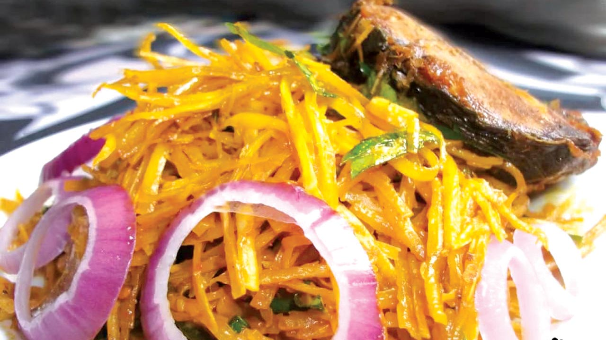

About The Dish
African Salad (locally known as Abacha) is one of the meals that mostly prepared and enjoyed by the Ibo speaking people of Nigeria. Its native taste is so distinctive, making it a delicacy to be enjoyed by all. It is usually served as a side dish in special events such as traditional weddings, burial ceremonies, anniversaries or the visit of a special guest. It is best served with Palm wine, a local drink tapped from special palm trees, but you can also enjoy it with any chilled drink of choice.
Ingredients
- 300g Abacha (dried shredded cassava)
- 100g Ugba(Ukpaka)
- 200ml Palm Oil
- 2 tablespoonful of pounded Crayfish
- 1 teaspoonful of smoothly grounded Potash
- 1 Cube of Seasoning
- 1 large (or 2 small) Onions
- Chilli Pepper/ any hot pepper (to taste) Salt
- 100g of finely chopped Garden Egg leaves.
- Boiled Dried fish or Stockfish